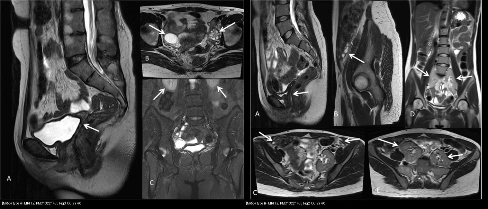
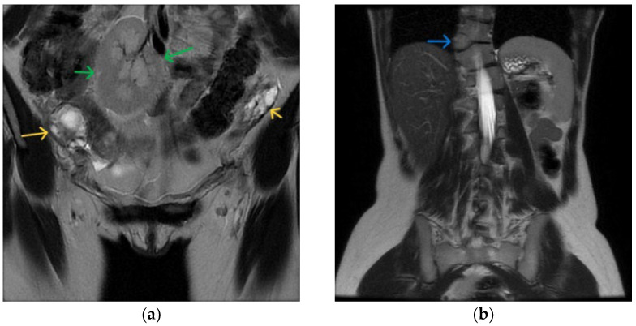
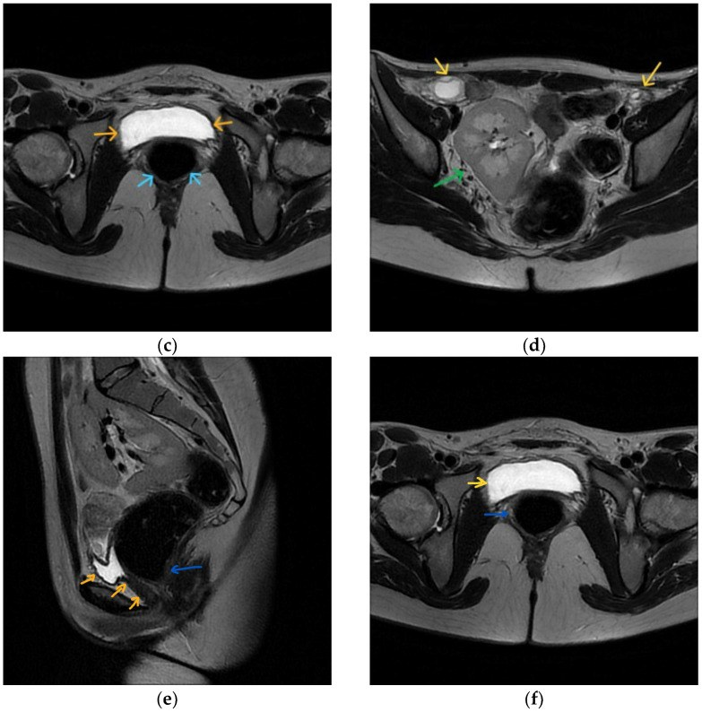
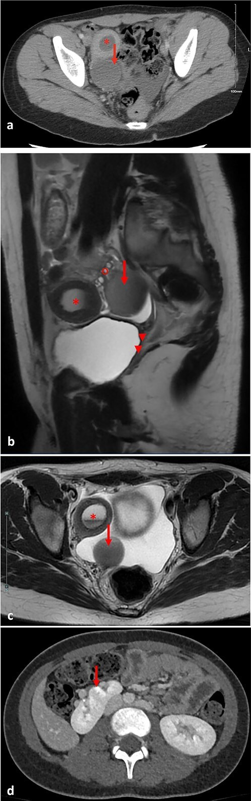
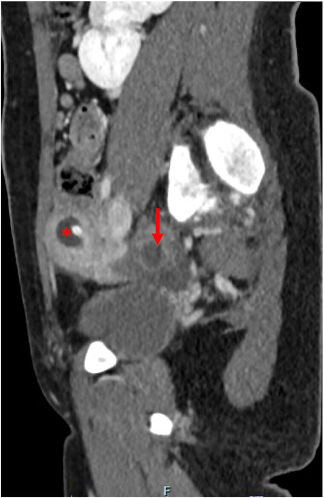
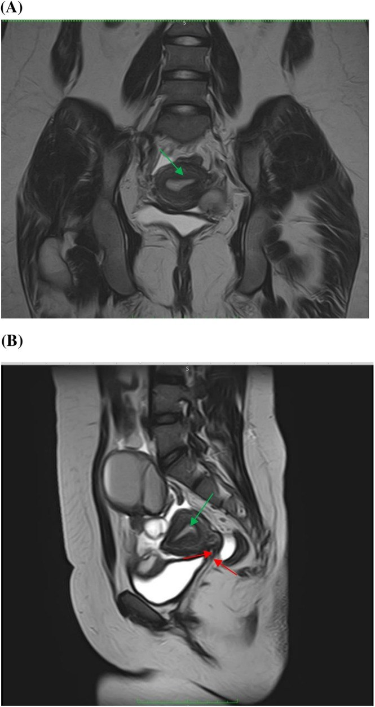
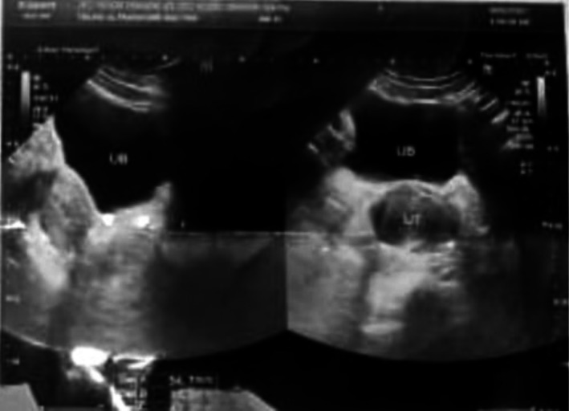
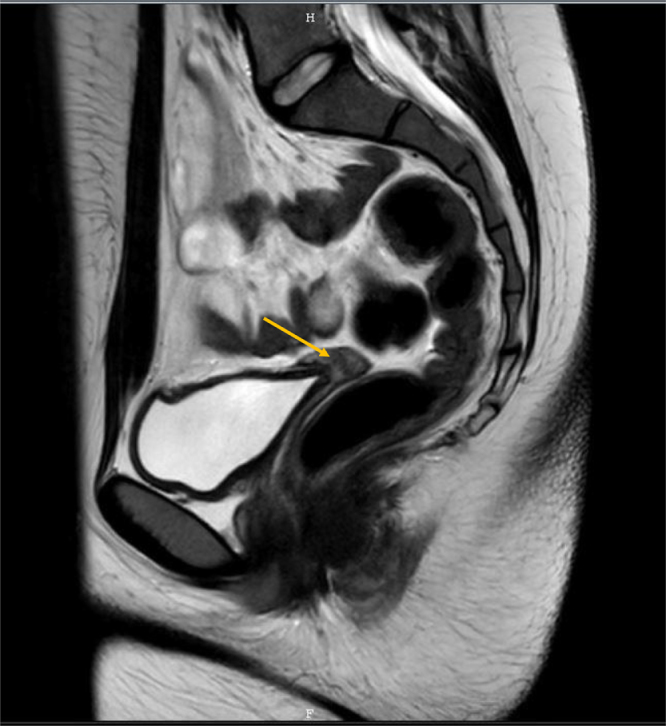
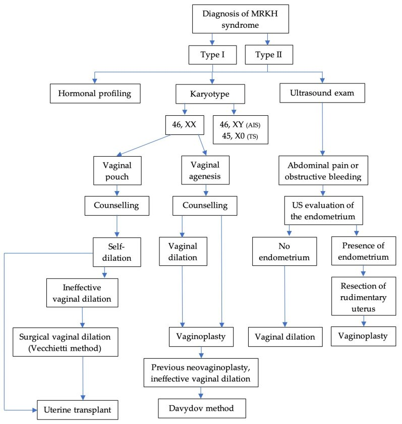

521 — Hội chứng Mayer–Rokitansky–Küster–Hauser (MRKH): bất sản tử cung–âm đạo & tạo hình âm đạo / MRKH syndrome & vaginoplasty
Tags: pattern:bat-san-muller pattern:am-dao-bat-san pattern:vo-kinh-nguyen-phat vung:tu-cung vung:am-dao score:MRKH-type protocol:MRI-tieu-khung
Mức chắc chắn (certainty): tổng hợp y văn (literature synthesis) — tổng quan + ca nguyên văn CC BY (Schiau Diagnostics 2026; Trivedi Cureus 2026; Mahajan J Surg Case Rep 2025; Irshad Clin Case Rep 2026; Varlas J Clin Med 2025; Begum Indian J Plast Surg 2025).
1. Tổng quan — mất ống Müller, giữ nguyên buồng trứng
- MRKH (Mayer–Rokitansky–Küster–Hauser) là nhóm dị dạng ống cận trung thận (paramesonephric/Müllerian): bất sản tử cung + 2/3 trên âm đạo, trên người karyotype 46,XX, buồng trứng và nội tiết bình thường, hình thể nữ bình thường. 1/4.000–5.000 trẻ gái sơ sinh; chiếm ~16% các ca vô kinh nguyên phát (đứng thứ 2 sau suy buồng trứng).
- Bệnh học phôi thai (TẠI SAO hình ảnh như vậy): ống Müller hình thành ống dẫn trứng–tử cung–cổ tử cung–2/3 trên âm đạo (tuần 8–12). Khi bất sản, các dẫn xuất này thiếu → tử cung/cổ/2/3 trên âm đạo không có; 1/3 dưới âm đạo sinh từ xoang niệu sinh dục (ngoại bì) vẫn còn → túi cùng âm đạo ngắn, cụt, sâu 2–7 cm. Vì tuyến sinh dục nguyên thủy (buồng trứng) sinh từ trung mô nguyên thủy, buồng trứng thường còn và hoạt động bình thường (bất thường buồng trứng chỉ 5–10%).
- TẠI SAO MRI là chìa khóa: MRI T2W phân biệt rõ cơ tử cung (tín hiệu trung gian), nội mạc (sáng), buồng trứng (sáng T2 do nang noãn) và tìm mầm tử cung thô sơ (rudimentary uterine buds), trong khi siêu âm ở trẻ vị thành niên chưa trưởng thành dễ bỏ sót. MRI cũng một mạch phát hiện bất thường kèm theo (thận, cột sống) và loại trừ ổ ứ máu.
- Phân loại & đi kèm (số liệu Schiau 2026):
- Type I = A (thể đơn độc): chỉ bất sản tử cung–âm đạo.
- Type II = B (thể có hội chứng / MURCS): kèm dị tật ngoài sinh dục — thận 30–40% (bất sản một thận là hay gặp nhất, ~một nửa), xương 10–12% (trong MURCS 30–40%, vẹo cột sống ~20%, Klippel–Feil), nghe 10–25%, tim < 5%.
- Hội chứng MURCS = MUllerian aplasia + Renal + Cervicothoracic Somite (thể nặng nhất).
- ~3% MRKH có tử cung CÒN CHỨC NĂNG nhưng tắc nghẽn → ứ máu tử cung (hematometra) + ứ máu vòi trứng (hematosalpinx) → đau bụng chu kỳ ở tuổi vị thành niên (Mahajan 2025, ca 12 tuổi). Đây là cấp cứu/đau mạn cần giải quyết.
- Điểm phải loại trừ trước tiên: hội chứng không nhạy cảm androgen hoàn toàn (complete androgen insensitivity — CAIS/AIS) — karyotype 46,XY, có tinh hoàn (thường trong bẹn), thiếu lông mu, testosterone cao; lâm sàng + xét nghiệm karyotype/testosterone là chốt (MRI một mình gần giống).
2. Mẫu hình + chẩn đoán phân biệt (Gamut)
- Hình thái cửa vào: "vô kinh nguyên phát + tuyến vú phát triển bình thường + lông mu bình thường". Nếu vú phát triển → estrogen có → không phải suy buồng trứng/Turner kinh điển; nếu lông mu bình thường → không phải AIS. Tổ hợp này thu hẹp mạnh về nhóm tắc nghẽn/bất sản Müller.
- Gamut theo hình ảnh (MRI tiểu khung):
- Không có tử cung + buồng trứng bình thường: MRKH type I (thận bình thường) vs MRKH type II (thận/tử cung kèm dị tật).
- Thấy mầm tử cung + ứ dịch/ứ máu: MRKH thể có tử cung chức năng tắc nghẽn; hoặc bất sản cổ tử cung (cervical agenesis) / vách ngang âm đạo (bài 529).
- Bên trong bẹn có tuyến sinh dục + 46,XY: AIS.
- Tử cung rất nhỏ + FSH/Cao + vú kém phát triển: suy buồng trứng/Turner (45,X) — không phải MRKH.
- Gợi nhớ "KVAA": Không có tử cung — Vagina ngắn cụt — Anh hưởng thận/xương — Androgen (soát karyotype). Luôn trả lời đủ 4 câu.
3. Bảng so sánh phân biệt (ma trận đối chiếu)
| Thực thể (entity) | Hình ảnh điển hình (US/MRI) | Chốt vào (rule-in) | Chốt loại (rule-out) | Gợi ý xác nhận |
|---|---|---|---|---|
| MRKH type I (A) | Tử cung/cổ/2/3 trên âm đạo không có; buồng trứng bình thường có nang noãn; thận hai bên bình thường | Không tử cung + buồng trứng bình thường + 46,XX | Thấy tuyến sinh dục bẹn + 46,XY → AIS | MRI T2 3 mặt phẳng + karyotype |
| MRKH type II (B/MURCS) | Như trên + dị tật thận (bất sản một thận, thận lạc chỗ/móng ngựa) ± xương/nghe | Không tử cung + bất thường thận/cột sống | Thận hai bên bình thường + không dị tật → type I | MRI + siêu âm/MRI thận + X-quang/nghe |
| Thể có tử cung tắc nghẽn | Mầm tử cung ứ máu (hematometra) + ứ vòi trứng; đau chu kỳ | Mầm tử cung ngấm — ứ dịch T2 sáng + túi máu | Không thấy mầm tử cung → thể đơn thuần | MRI; mổ nội soi dẫn lưu |
| CAIS / AIS | Không tử cung; tinh hoàn (bẹn) — mô tuyến sinh dục; âm đạo ngắn cụt | Karyotype 46,XY + thiếu lông mu + testosterone cao | 46,XX + lông mu bình thường → MRKH | Karyotype + testosterone; tư vấn cắt tuyến sinh dục |
| Turner / suy buồng trứng | Tử cung rất nhỏ nhưng CÓ, buồng trứng dạng dải (streak); vú kém phát triển | Tử cung còn + FSH cao + karyotype 45,X/46,XX | Tử cung không có → MRKH | FSH/estradiol + karyotype |
| Vách ngang âm đạo / màng trinh kín | Ứ máu âm đạo (hematocolpos) phía trên vách; tử cung CÓ | Tử cung có + ứ máu âm đạo | Không tử cung → MRKH | MRI xác định vị trí vách (bài 529) |

Trái: type A — MRI T2 xoay dọc: không có tử cung/cổ/2/3 trên âm đạo (mũi tên), buồng trứng bình thường, thận hai bên bình thường. Phải: type B — cùng hình thái bất sản nhưng kèm thận lạc chỗ hai bên (mũi tên). Nguồn: Trivedi VS et al., Cureus 2026, PMC13221453 Fig. 2 & 3, CC BY 4.0. Ảnh ghép letterbox, giữ nguyên tỷ lệ.Hai cách gọi tên (tránh nhầm)
- Type I/II (kinh điển) = type A/B (cách gọi nhiều bài hình ảnh dùng): A = đơn độc (isolated uterovaginal agenesis); B = kèm dị tật (hay gặp nhất là thận). Bản chất giống nhau; type II/B gộp cả MURCS.
- "Typical vs atypical" cũng tương ứng: typical = chỉ bất sản Müller; atypical = có dị tật cơ-quan ngoài.
4. Protocol chụp + phân độ & xử trí
- Chẩn đoán hình ảnh (thứ tự):
- Siêu âm tiểu khung (bụng hoặc đầu dò 3D qua âm đạo khi đã đủ tuổi): xác nhận không tử cung, tìm buồng trứng, đánh giá thận.
- MRI tiểu khung (chuẩn vàng): T2 3 mặt phẳng (tìm mầm tử cung, đo túi âm đạo cụt), T1 ± T2 fat-sat (máu cũ/ứ máu), có thể DWI. Ghi rõ: có/không mầm tử cung, chiều dài túi âm đạo, buồng trứng, vị trí thận.
- Loại trừ AIS: karyotype + testosterone (bắt buộc trước kết luận MRKH ở người chưa có kết quả).
- Tầm soát kèm theo: siêu âm/MRI thận (± đường niệu), X-quang/nghe (cột sống–thính lực), tim nếu nghi.
- Phân độ: dùng type I (A) vs type II (B)/MURCS như mục 3; ghi kèm bản đồ dị tật (thận/xương/nghe/tim) để tư vấn.
- Xử trí — tạo hình âm đạo (vaginoplasty):
- Bước 1: nong âm đạo không mổ (dilation / Frank): điều trị đầu tay, hiệu quả cao, ít biến chứng. Tỷ lệ thành công 74–95% (một số nghiên cứu 64%); dùng nong tăng dần kích thước ngoài giờ giao hợp.
- Bước 2: phẫu thuật khi thất bại/từ chối nong:
- Vecchietti (nếu còn túi âm đạo): kéo căng bằng nút căng dần (theo ACOG, lựa chọn thứ 2 sau nong).
- Davydov (nếu bất sản âm đạo): tạo vòm âm đạo bằng mảnh phúc mạc; loại nội soi hay dùng nhất. Series n = 83: dài 8,2 ± 0,8 cm lúc 6 tháng, thành công chức năng 95,3% lúc 12 tháng (thang FSFI).
- McIndoe (ghép da): phổ biến nhất nhưng cần nong suốt đời, dễ co kéo/khô. Series Begum n = 7: 2/14,3% biến chứng (co kéo mảnh ghép, mất một phần mảnh ghép); dài 6–10 cm (trung bình 8 cm).
- Varlas 2025 (Davydov cải tiến + treo vòm âm đạo vào xương cùng, n = 3): dài 14,66 cm lúc ra viện → ~11,3 cm sau 5 năm, không hẹp, không mô hạt.
- Tiêu chuẩn "âm đạo mới thành công": dài ≥ 7 cm (nhiều tác giả ≥ 6 cm), đủ rộng cho 2 ngón tay, giao hợp không đau, hài lòng.
- So sánh nong vs mổ (Kang, n = 133): chiều dài nong 6,5 ± 2,04 cm vs mổ 8,1 ± 1,59 cm; điểm FSFI tương đương trừ điểm cực khoái cao hơn ở nhóm nong.
- Nong là bắt buộc sau mọi phẫu thuật để giữ dài, chống hẹp âm đạo.
- Sinh sản: buồng trứng còn chức năng → trứng khỏe; ghép tử cung đã có ca sinh sống đầu tiên 2014 (Gothenburg); mang thai hộ là lựa chọn khác. Cần tư vấn tâm lý (ảnh hưởng sâu sắc bản sắc/giới tính).
flowchart TD
A[Vô kinh nguyên phát, vú + lông mu bình thường] --> B[Siêu âm + MRI tiểu khung]
B --> C{Có tử cung?}
C -->|Có, nhỏ/rất nhỏ| D[Turner/suy buồng trứng: FSH, karyotype]
C -->|Có + ứ máu âm đạo| E[Vách ngang/màng trinh kín: MRI định vị - bài 529]
C -->|KHÔNG có| F[Karyotype + testosterone]
F -->|46,XY + thiếu lông mu| G[AIS: cắt tuyến sinh dục, tư vấn]
F -->|46,XX| H[MRKH type I/II: soát thận-xương-nghe]
H --> I{Mầm tử cung ứ máu?}
I -->|Có| J[Mổ nội soi dẫn lưu/hysterostomy]
I -->|Không| K[Nong âm đạo đầu tay]
K -->|Thất bại/từ chối| L[Tạo hình: Vecchietti/Davydov/McIndoe]
5. Biến thể bình thường & cạm bẫy
- Không được gọi AIS là MRKH: nếu chưa có karyotype + testosterone, không kết luận MRKH. MRI giống nhau (không tử cung) nhưng AIS có tinh hoàn và 46,XY — hướng xử trí hoàn toàn khác (nguy cơ u tuyến sinh dục, phải cắt tinh hoàn).
- Nhầm "túi mầm" với buồng trứng: vẫn phải chứng minh buồng trứng bình thường (nang noãn, T2 sáng) — nếu mô tả mơ hồ dễ bỏ sót u/hoại tử buồng trứng.
- Bỏ sót bất thường thận (30–40%): luôn chụp/đọc kèm thận hai bên — thận lạc chỗ (pelvic/ectopic kidney) có thể bị nhầm thành khối phần phụ.
- Thể có tử cung chức năng ứ máu (~3%): đau bụng chu kỳ ở trẻ vị thành niên — không được xem nhẹ; ứ máu kéo dài gây lạc nội mạc, dính, hiếm muộn nặng hơn.
- Tử cung thô sơ nhỏ trong MRKH vs tử cung giảm sản do suy sinh dục: kiểm tra FSH/estradiol và phát triển vú — tránh gọi MRKH khi chưa loại trừ nội tiết.
- Siêu âm ở trẻ chưa trưởng thành dễ âm tính giả (không thấy tuyến sinh dục) → MRI khi nghi ngờ; tránh thăm khám âm đạo ở trẻ chưa dậy thì.
6. Tự lượng giá — Blind Quiz
Ca 1 — Nữ 19 tuổi vô kinh nguyên phát, vú và lông mu bình thường. Đọc MRI xoay dọc + trục trước khi mở đáp án.

- Hỏi: có tử cung không? Buồng trứng còn không? Bất thường nào kèm theo? Cần xét nghiệm gì trước khi kết luận?
Bấm để hiện đáp án (findings + chẩn đoán)
- Dấu hiệu (findings): không có tử cung–cổ–2/3 trên âm đạo; buồng trứng bình thường (mũi tên vàng); thận lạc chỗ (mũi tên xanh lá), bán đốt sống (mũi tên xanh đậm), bàng quang (cam), trực tràng (xanh nhạt). Bản đồ chi tiết:

- Chẩn đoán (diagnosis): MRKH type II (MURCS) — bất sản Müller + thận lạc chỗ + bán đốt sống. Trước khi kết luận cần karyotype + testosterone (loại trừ AIS) và tầm soát thận–cột sống–thính lực.
- Nguồn: Schiau C et al., Diagnostics (Basel) 2026, PMC12785829 Fig. 1, CC BY 4.0.
Ca 2 — Cùng nhóm bệnh, hai thể. Bên nào là type A, bên nào là type B? Nhãn giấu trong đáp án.
Bấm để hiện đáp án (findings + chẩn đoán)
- Trái = type A: không tinh hoàn, buồng trứng bình thường, thận hai bên bình thường.
- Phải = type B: cùng bất sản tử cung–âm đạo nhưng kèm thận lạc chỗ hai bên (mũi tên).
- Chốt: type A = đơn độc; type B = có dị tật kèm (thường thận) — giống cách gọi type I/II.
- Nguồn: Trivedi VS et al., Cureus 2026, PMC13221453 Fig. 2 & 3, CC BY 4.0.
Ca 3 — Bé gái 12 tuổi đau bụng dưới hạ vị từng đợt chu kỳ, được chẩn đoán MRKH. Đọc CT + MRI để tìm nguyên nhân đau.

- Hỏi: có mầm tử cung không? Mũi tên ( * ) và mũi tên chỉ gì? Vì sao đau chu kỳ?
Bấm để hiện đáp án (findings + chẩn đoán)
- Dấu hiệu (findings): (a) CT trục — *sừng tử cung phải ứ máu (hematometra, ) + cấu trúc dạng nang phần phụ phải: ứ máu vòi trứng (hematosalpinx, mũi tên); (b) MRI xoay dọc cạnh dọc — sừng tử cung ứ máu + ứ vòi trứng, buồng trứng phải bình thường (o), cổ tử cung thoái triển.
- Chẩn đoán (diagnosis): MRKH có tử cung CÒN CHỨC NĂNG bị tắc nghẽn → ứ máu tử cung + ứ máu vòi trứng — nguyên nhân đau bụng chu kỳ. Đây là thể ~3% cần mổ nội soi dẫn lưu (hysterostomy) chứ không chỉ nong âm đạo.
- Nguồn: Mahajan UV et al., J Surg Case Rep 2025, PMC12503158 Fig. 1, CC BY 4.0.
Ca 4 — Bệnh nhân Ca 3 sau dẫn lưu. Đọc CT kiểm tra 2 tuần sau.

Bấm để hiện đáp án (findings + chẩn đoán)
- Dấu hiệu (findings): hết ứ máu tử cung (*) và ứ vòi trứng giảm rõ so với trước mổ.
- Chẩn đoán (diagnosis): thành công sau dẫn lưu nội soi — hình ảnh theo dõi sau can thiệp; triệu chứng đau hết hoàn toàn.
- Nguồn: Mahajan UV et al., J Surg Case Rep 2025, PMC12503158 Fig. 3, CC BY 4.0.
Ca 5 — Bé gái 16 tuổi vô kinh nguyên phát, siêu âm bụng thấy túi dịch trong tiểu khung. Đọc siêu âm, rồi MRI.

- Hỏi: túi dịch là gì? Có nên gọi "nang buồng trứng" không? Cần phân biệt với gì trên MRI?
Bấm để hiện đáp án (findings + chẩn đoán)
- Dấu hiệu (findings): siêu âm trục + dọc — buồng tử cung giãn, chứa dịch giảm âm đồng nhất = ứ máu tử cung (hematometra); bàng quang (UB) phía trước; không thấy ống cổ tử cung và âm đạo (gợi ý bất sản cổ–âm đạo). Đối chiếu MRI:

- Dấu hiệu trên MRI: (A) T2 vành, (B) T2 dọc — cổ tử cung thoái triển (cervical hypoplasia) + bất sản âm đạo (mũi tên đỏ) + buồng tử cung giãn (mũi tên xanh).
- Chẩn đoán (diagnosis): tắc nghẽn đường ra (ứ máu tử cung) do bất sản cổ tử cung/âm đạo — cần phân biệt với nang buồng trứng và xác định vì sao đau vô kinh; phẫu thuật tạo đường ra/staged.
- Nguồn: Irshad S et al., Clin Case Rep 2026, PMC12920063 Fig. 1 & 2, CC BY 4.0.
Ca 6 — Bệnh nhân MRKH 18 tuổi, đau chậu mạn, hai sừng tử cung thô sơ. Đọc MRI.

Bấm để hiện đáp án (findings + chẩn đoán)
- Dấu hiệu (findings): MRI — bất sản âm đạo và cổ tử cung, hai sừng tử cung thô sơ hai bên, buồng trứng hai bên bình thường; karyotype 46,XX.
- Chẩn đoán (diagnosis): MRKH; lựa chọn cắt hai sừng tử cung thô sơ bằng robot (khi đau chậu mạn). Ảnh CC BY-NC-ND giữ nguyên bản (không ghép/crop).
- Nguồn: Csorba R et al., Int J Surg Case Rep 2026, PMC13456869 Fig. 1, CC BY-NC-ND 4.0.
Ca 7 — Sơ đồ xử trí: đọc và tự trả lời trước khi mở.

Bấm để hiện đáp án (findings + chẩn đoán)
- Nội dung: cây quyết định điều trị MRKH — phân nhánh với AIS (hội chứng không nhạy cảm androgen) và TS (Turner); cơ sở chọn nong hay phẫu thuật tùy có túi âm đạo hay không.
- Chốt: loại trừ AIS/Turner bằng karyotype–nội tiết trước, rồi mới quyết định nong (đầu tay) vs Vecchietti/Davydov/McIndoe.
- Nguồn: Varlas VN et al., J Clin Med 2025, PMC11856762 Fig. 3, CC BY 4.0.
Bài liên quan chéo
- 520 – Tử cung: xơ FIGO, adenomyosis & nội mạc
- 528 – Dị dạng tử cung bẩm sinh (ESHRE/ESGE & ASRM)
- 529 – Cổ tử cung & âm đạo bẩm sinh: dị dạng tắc nghẽn (C0–C4/V0–V4)
- 525 – Ung thư nội mạc/cổ tử cung FIGO MRI
- 536 – U mầm & u mô đệm–dây sinh dục buồng trứng (tuyến sinh dục bất thường)
- 571 – Sẩy thai tái diễn: tiếp cận hình ảnh tử cung
- 500 – Tổng quan Vú & Sản Phụ khoa
Không dùng để chẩn đoán độc lập khi chưa có người hướng dẫn.